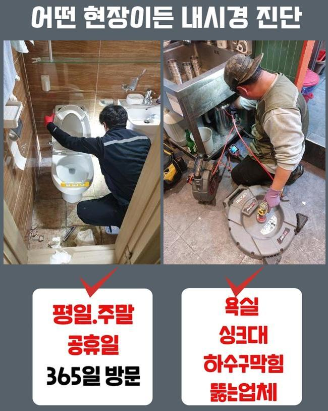
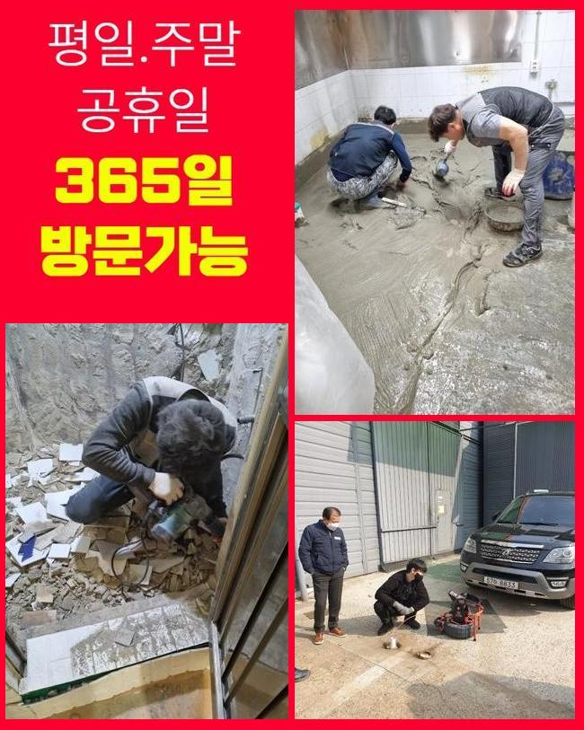
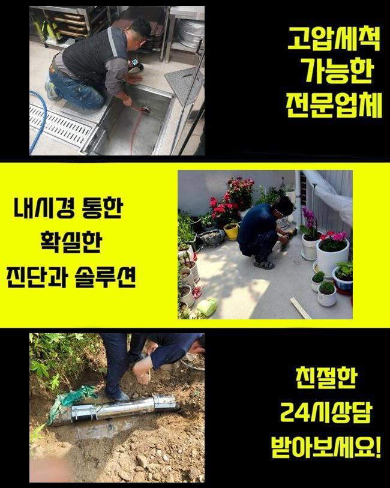
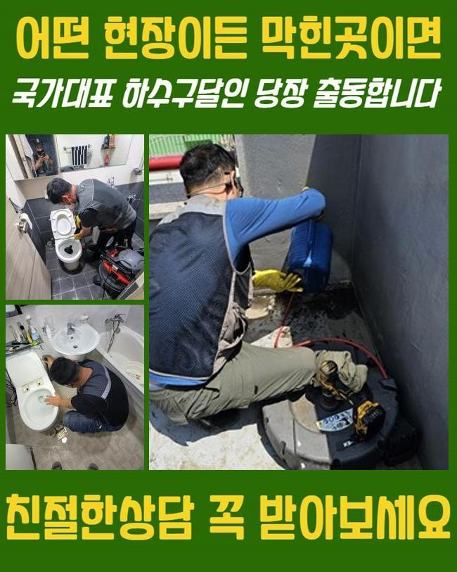
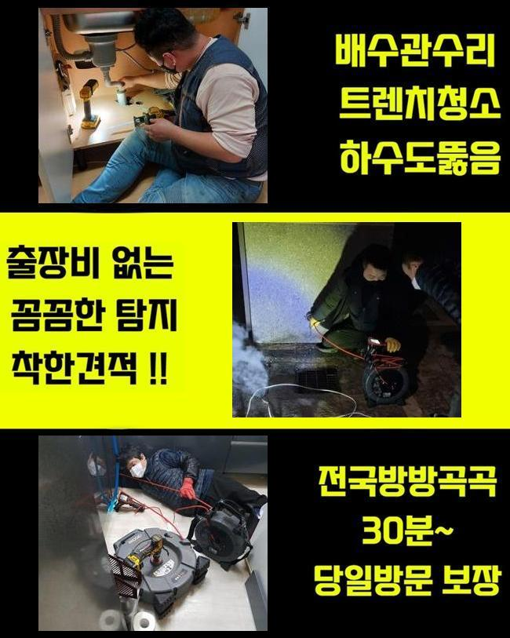

🏠 동대문 장안동변기역류 휘경동 하수구청소장비 설비업체
용인 변기막힘 전문 시공 후기

📋 작업 개요
- 위치: 용인
- 서비스 유형: 변기막힘, 하수구막힘, 배관막힘, 역류해결, 배관청소
- 작업 일시: 2025. 5. 24. 10:22
- 업체명: 하수구수사대 (010-5615-2118)
🔍 문제 상황
동대문 장안동변기역류 휘경동 하수구청소장비 설비업체
어제 저녁에 의뢰인께 긴급요청을 전달받고 알려주신 주소지로 달려갔습니다
의뢰인께서는 문제 상황으로 의뢰를 맡기셨고 저희 업체는 신속정확하게 전문 기기를 챙겨서 현장에 도착했어요
배수구가 막힌 경우에 고객님께 난감한 상황들이 발생하므로 막힘사고를 최대한 빨리 처리하는게 제일 중요하죠
빠르게 목적지에 도착하여 우선적으로 문제 지점을 살펴보았습니다
하수관 역류사고는 세탁실쪽에서 발생했는데 비정상으로 오수가 흘러가지 못했고 거꾸로 올라오고 있있어요
고객분께서는 하수라인이 반복적으로 막히는 상황을 고쳐보려고 다방면으로 시도 해봤으나 점점 문제가 심각해져서 세탁기기를 이용할 수 없게 되어버린 상황까지 왔다고 이야기 해주셨어요
일반 가정에서 하수설비가 고장난걸 직접 수리 해보겠다고 시중에 나와있는 관련 제품들을 사용해보시지만 근본이 되는 정확한 이유를 찾아서 처리할 수 없는 경우들이 많아요

🔎 원인 분석
💡 전문가 진단: 정밀 진단 장비를 사용하여 슬러지의 고착 여부를 판명하고 타격/세척 작업을 실시했습니다.
배수구는 사용이 많아질수록 노폐물등이 쌓여서 문제가 일어나므로 이상이 생긴 부위를 확인하고 해결을 하셔야해요
제일 먼저 하수구의 구조와 바깥쪽 하수관 확인을 해봤습니다
배수관 막힘사고를 꼼꼼하게 확인하기 위해서라면 안쪽만 볼게 아니라 외부로 나있는 배수관도 살펴봐야합니다
배수관은 가정에서 사용된 하수를 외부의 배관으로 보내는 구조로 되어있어서 막힘문제의 원인들이 안쪽인지 외부 배관쪽에 있는건지 정확하게 확인해봐야 해요
전체적으로 확인해보니 외부 하수라인에 불순물이 가득해 물이 잘 배출되지 않았어요
이와같은 배수구 막힘문제를 처리하기 위해서는 내부쪽과 외부쪽의 하수라인을 한큐에 작업합니다
우선 내시경기기를 사용해서 하수라인 내부를 자세하게 체크합니다
모니터로 하수라인 내벽에 두껍게 층을 이룬 슬러지가 배수관을 막고 있는 모습을 볼 수 있었어요

🔧 작업 과정
샤프트기계를 이용해서 하수라인에 쌓여있는 침전물을 해결하는 작업에 들어갔습니다
샤프트기는 회전하는 힘을 사용해 침전물을 신속정확하게 제거하는 기기로 하수관에 달라붙은 굳어버린 침전물을 분쇄해서 배출시키는 장비입니다
샤프트기계는 배수관 안에 가득한 슬러지를 파쇄하여 배수관의 기능을 정상적으로 만들어 줍니다
하수라인이 막혀있는 정도가 꽤 심한 편이라서 전문 기술진들이 반복적으로 하수라인 속에 붙어있던 침전물을 완벽하게 처리했습니다
크기가 작은 쓰레기는 사용 할 때마다 하수라인에 쌓이게 되면서 물이 빠져나가는 것을 지연시키므로 지금처럼 오염물질이 안쌓이도록 노력해야합니다
내부쪽 배수구에서 빼냈던 불순물들이 배관 속으로 들어가지 않게 걸러서 버리는 작업과정까지 끝내고 하수관을 다시 확인합니다
오늘 현장의 경우엔 단단하게 변형 되어버린 침전물이 하수관을 막아서 물이 역류하는 상태였는데 작업을 끝내고 내시경기기를 통해서 배수구 내부 상태가 깨끗해진걸 확인하고 마무리 지었습니다
마지막 마무리까지 다하고 물을 틀어 계속적으로 내려보내며 물이 잘 안내려가는 등의 문제들이 없는지 통수검사를 실시했어요
하수시설의 별다른 이상없이 잘 내려가는 모습을 체크하고 현장을 마무리를 할 수 있었습니다
사례자님께서는 막힘현상 이후에 오류가 해결되어가는 과정까지 작업과정을 시작하면서부터 저희 옆에서 모든 과정으로 지켜보셨어요
저희 전문가는 배수구 관련 문제들을 밤낮을 가리지 않고 해결 해드려요
하수설비에 이상이 발생하면 의뢰인께 매우 불편한 상황이 생겨날 수도 있으므로 저희 전문진은 이러한 문제를 처리 해드리기 위해서 언제나 긴급출동하고 있습니다
이러한 배수구 막힘 사고는 단순한 배수의 문제들만이 아닌 위생적인 부분에도 영향을 주므로 신속하게 처리하시는게 좋습니다


✅ 작업 완료
혹시 밑에층에도 피해를 주게 되었다면 윗층에서 영향을 받은 문제점인지 알아보는 것이 우선이므로 전문진에게 점검을 의뢰하여 확인을 해보시기 바랍니다
저희 업체는 효율적이고 발 빠르게 처리속도로 고객분께서 만족하실 수 있게끔 최선을 다하겠습니다
하수설비 관련 전문진의 조언이 필요하시다면 언제라도 저희 전문진에게 문의 해주시면 꼼꼼하게 안내 해드리겠습니다
하수설비의 이상이 발견된 경우 지금 당장 전화주세요


⚠️ 하수구 배관 막힘 예방 및 관리 가이드
- ✅ 머리카락, 비닐, 물티슈 등 물에 분해되지 않는 이물질은 하수구 유입을 절대 금지해 주세요.
- ✅ 하수구 거름망을 씌우고 모여진 이물질은 주기적으로 쓰레기통에 바로 비워주셔야 합니다.
- ✅ 배관 노후가 심할 경우 이물질이 더 쉽게 걸리므로 주기적인 배관 세척(고압세척 등)을 권장합니다.
- ✅ 작업 후 1년 이내 재발 시 하수구수사대에서 무상 A/S 보증 서비스를 제공합니다.
💡 핵심 정리
- 확실한 장비 작업(내시경 점검 및 샤프트 스케일링)으로 원인을 뿌리 뽑습니다.
- 작업 후 1년 이내에 동일한 부위 재발 시 100% 무상 A/S 서비스를 보장합니다.
- 서울 · 경기 · 인천 전 지역에 24시간 언제든 긴급 출동할 수 있도록 항시 대기 중입니다.
❓ 자주 묻는 질문 (FAQ)
🚨 용인 변기막힘 문제로 고민이신가요?
정확한 원인 진단과 확실한 시공으로 재발 없는 해결을 약속드립니다.
24시간 긴급 출동 | 서울 · 경기 · 인천 전지역 | 1년 내 재발 시 무상 A/S